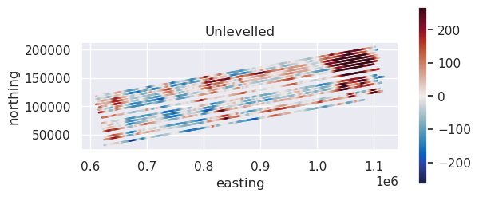
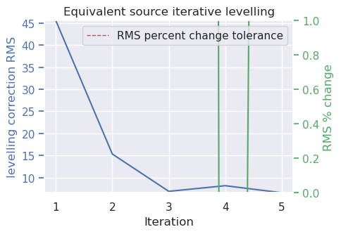
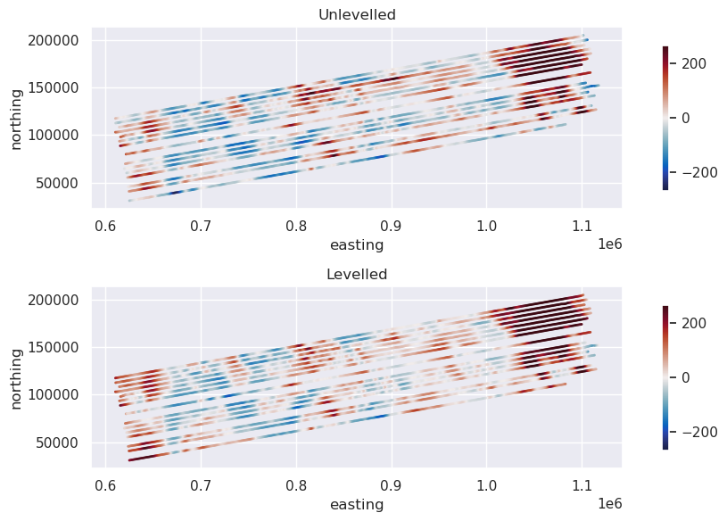

6. Levelling with equivalent sources#
If we don’t have crossing lines, and therfore don’t have cross-over errors, we can instead use the data of nearby lines to level each line in a survey.
[1]:
# %load_ext autoreload
# %autoreload 2
import logging
import cmocean
import matplotlib.pyplot as plt
import pandas as pd
import plotly.io as pio
import verde as vd
import airbornegeo
logging.getLogger("airbornegeo").setLevel("WARN")
logging.basicConfig()
pio.renderers.default = "notebook"
/home/sungw937/airbornegeo/.pixi/envs/default/lib/python3.14/site-packages/tqdm/auto.py:21: TqdmWarning: IProgress not found. Please update jupyter and ipywidgets. See https://ipywidgets.readthedocs.io/en/stable/user_install.html
from .autonotebook import tqdm as notebook_tqdm
6.1. Load data#
This is a subset of the BAS AGAP survey over Antarctica’s Gamburtsev Subglacial Mountains. The file is download and subset in the notebook AGAP_magnetic_survey, and the BAS processing steps are repeated in the notebook processing_AGAP_magnetic_survey.
[2]:
data_df = pd.read_csv("data/AGAP_magnetic_survey_processed_blocked.csv")
data_df = data_df[
[
"easting",
"northing",
"height",
"line",
"distance_along_line",
"mag",
]
]
data_df = data_df.rename(columns={"mag": "mag_unlevelled"})
data_df = data_df.dropna(subset=["mag_unlevelled"], how="any")
# pick a subset of lines
data_df = data_df[data_df.line >= 42]
data_df = data_df[data_df.line < 90]
data_df = data_df[data_df.line >= 75]
data_df.head()
[2]:
| easting | northing | height | line | distance_along_line | mag_unlevelled | |
|---|---|---|---|---|---|---|
| 300335 | 1.101638e+06 | 204725.949316 | 4292.50 | 75 | 0.000000 | -70.015 |
| 300336 | 1.101482e+06 | 204674.286358 | 4293.25 | 75 | 164.076670 | -49.095 |
| 300337 | 1.101385e+06 | 204641.863294 | 4293.60 | 75 | 266.610209 | -47.690 |
| 300338 | 1.101320e+06 | 204620.197626 | 4293.80 | 75 | 335.043395 | -46.700 |
| 300339 | 1.101223e+06 | 204587.587218 | 4293.95 | 75 | 437.550594 | -45.200 |
[3]:
max_abs = vd.maxabs(data_df.mag_unlevelled, percentile=95)
ax = data_df[::10].plot.scatter(
"easting",
"northing",
c="mag_unlevelled",
s=0.6,
cmap=cmocean.cm.balance,
vmin=-max_abs,
vmax=max_abs,
colorbar=False,
title="Unlevelled",
)
ax.set_aspect("equal")
plt.colorbar(ax.collections[0], ax=ax, shrink=0.6)
plt.show()

6.2. Perform iterative equivalent source levelling#
This function will go through each line and perform the following steps:
find the data within
max_distof the line data (exluding the line data itself)fit equivalent sources to this nearby data (with the provided
damping,depth, andblock_sizeparameters)predict the forward effect of these equivalent sources onto the line
compute a misfit between the observed and predicted values
fit a trend ff the specified
degree(0 for DC-shift, 1 for tilt, 2 for curve etc.)add this trend to the observed line data.
This results in a levelled line. The algorithm then processed to the next line. The order it goes through the lines is randomized, as set by the seed parameter for reproducibility. by default, all lines with be levelled. If you only want to level a subset of lines, you can pass a list of line names to parameter lines_to_level. Once all (or subset of) lines are levelled, this concludes the first iteration. The entire processed can be repeated by setting parameter max_iterations to
greater than 1.
The iterations will terminate on one of 4 stopping criteria:
the
max_iterationsis reachedthe root mean square (RMS) of the levelling correction values for the iteration is below the set
rms_tolerancethe RMS of the levelling correction values has increased more than the set
rms_percent_increase_tolerancerelative to the minimum RMS value for past iterations; this helps to stop run-away iterationsthe RMS of the levelling correction values has not changed by more than the set
rms_percent_change_tolerancebetween 2 subsequent iterations; this help save time by ending iterations when they aren’t offering much improvement.
[4]:
data_df["mag_levelled"] = airbornegeo.equivalent_source_levelling(
data_df,
"mag_unlevelled",
degree=2,
max_dist=20e3,
damping=None,
depth="default",
block_size=20e3,
max_iterations=5,
)
data_df.head()
Iteration: 5: 80%|████████ | 4/5 [00:35<00:08, 8.65s/it]WARNING:airbornegeo:
Equivalent source levelling terminated after 5 iterations with RMS of levelling correction of 6.58 because maximum number of iterations (5) reached.
Iterations ended due to ['max iterations']: 80%|████████ | 4/5 [00:44<00:11, 11.02s/it]

[4]:
| easting | northing | height | line | distance_along_line | mag_unlevelled | mag_levelled | |
|---|---|---|---|---|---|---|---|
| 300335 | 1.101638e+06 | 204725.949316 | 4292.50 | 75 | 0.000000 | -70.015 | 89.446703 |
| 300336 | 1.101482e+06 | 204674.286358 | 4293.25 | 75 | 164.076670 | -49.095 | 110.166400 |
| 300337 | 1.101385e+06 | 204641.863294 | 4293.60 | 75 | 266.610209 | -47.690 | 111.446292 |
| 300338 | 1.101320e+06 | 204620.197626 | 4293.80 | 75 | 335.043395 | -46.700 | 112.352820 |
| 300339 | 1.101223e+06 | 204587.587218 | 4293.95 | 75 | 437.550594 | -45.200 | 113.727826 |
[5]:
fig, axs = plt.subplots(2, 1, figsize=(10, 6))
max_abs = vd.maxabs(data_df.mag_unlevelled, percentile=95)
ax = data_df[::10].plot.scatter(
"easting",
"northing",
c="mag_unlevelled",
s=1,
ax=axs[0],
cmap=cmocean.cm.balance,
vmin=-max_abs,
vmax=max_abs,
colorbar=False,
title="Unlevelled",
)
ax.set_aspect("equal")
plt.colorbar(ax.collections[0], ax=ax, shrink=0.8)
ax = data_df[::10].plot.scatter(
"easting",
"northing",
c="mag_levelled",
s=1,
ax=axs[1],
cmap=cmocean.cm.balance,
vmin=-max_abs,
vmax=max_abs,
colorbar=False,
title="Levelled",
)
ax.set_aspect("equal")
plt.colorbar(ax.collections[0], ax=ax, shrink=0.8)
plt.tight_layout()
plt.show()
